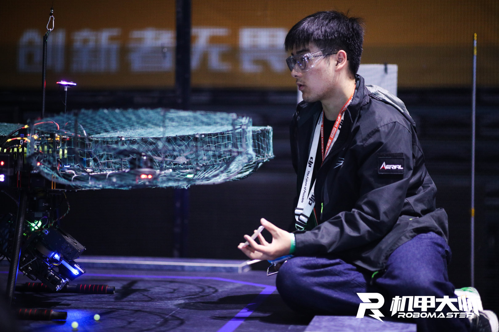
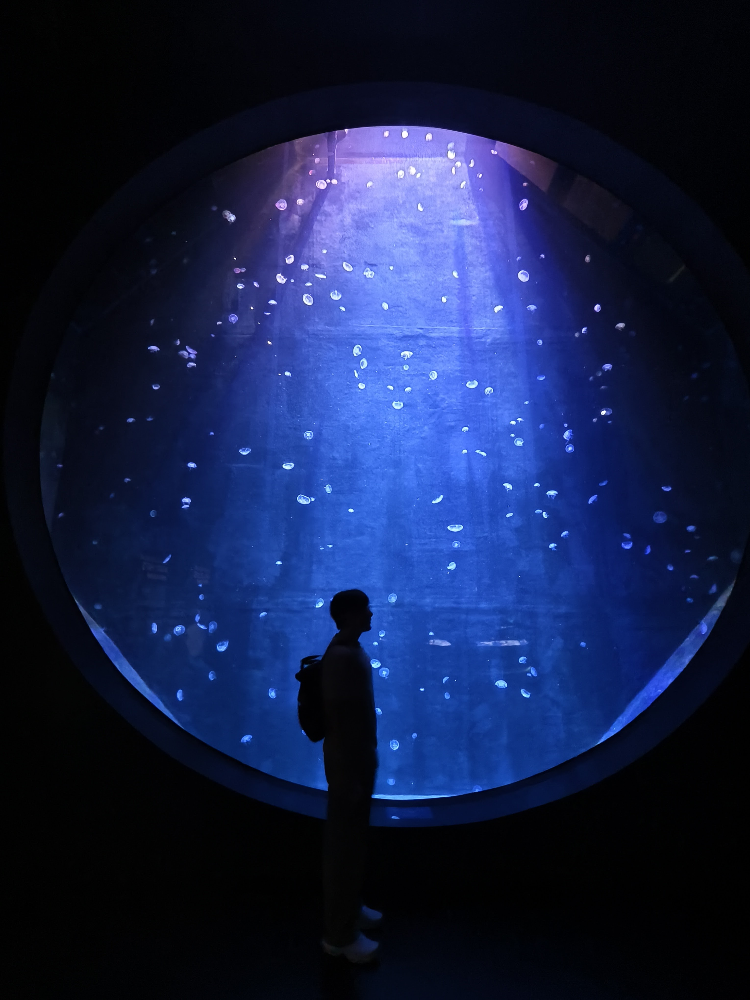
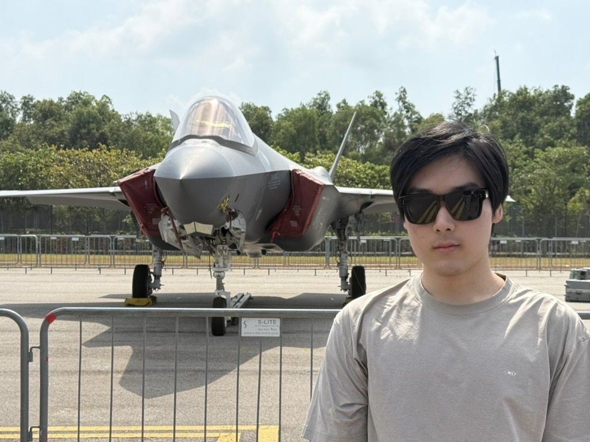

机器人研究者
面向灵巧、富接触操作的机器人学习。
我目前是南洋理工大学机械工程专业理学硕士研究生，在
吕辰（Chen Lv）教授
指导下开展研究，同时在新加坡科技研究局（A*STAR）先进再制造与技术中心（ARTC）担任研究实习生，实习导师为高级科学家 Shijun Yan 博士。
通用机器人策略能尝试很多任务，但在真实世界的富接触操作中往往不够精确、不够可靠。
我关注如何把它们变成快速、可靠的专才策略：学习在不同视角下依然可靠的奖励与任务进度信号，
并结合力觉反馈和人工干预，在真机上驱动强化学习。
我正在申请 2027 年秋季入学的博士项目。
机器人学习
灵巧操作
VLA 模型
世界模型
强化学习
- 两篇论文 AnyviewMeter 与 FIERCE 投稿至 IEEE ICRA 2027。
- 在 Intrinsic AI for Industry 挑战赛资格赛中位列约 120 支队伍中第 7 名。
- 加入 A*STAR ARTC 担任研究实习生，研究人形机器人拧螺丝的残差强化学习。
- 开始南洋理工大学硕士学习，获机械与宇航工程学院研究生奖学金（约 4 万美元，前 1%）。
新加坡
南洋理工大学
机械工程 理学硕士
GPA：4.5 / 5.0
中国 上海
新加坡
研究实习生
新加坡科技研究局（A*STAR）先进再制造与技术中心（ARTC）
- 搭建遥操作数据采集平台（AlphaBot2 + 外骨骼），并构建将示教数据转换为多任务 LeRobot 数据集的流程。
- 针对轮式双臂人形机器人的多步 PCB 螺丝拧紧任务微调 π0.5，并将其冻结为输出基础动作的基础策略。
- 在冻结的 π0.5 之上训练力感知残差策略，处理富接触的孔位对准与拧紧：以视觉特征、本体感知及力/力矩信号为输入，结合人工干预通过 SAC + RLPD 在真机上在线学习；由门控模块调制残差后再与基础动作合成。
中国 上海
算法实习生
上海燃境科技
- 训练深度学习模型并评估人体骨骼关键点识别性能。
- 开发基于规则的算法，实现多类运动的计数与违规动作检测。
- 设计图像处理方法，用于立定跳远距离估计。
-
AnyviewMeter: Adapting Robotic Reward Models with Camera Geometry and Multi-View Attention
Yuang Tu, Runjia Tan, Yujie Yan, Jinghan Hu, Chen Lv
投稿至 IEEE ICRA 2027 · arXiv:2609.20106 [cs.CV]
-
FIERCE: From Generalist Robot Policies to Fast Specialists via Progress-Failure Feedback
Runjia Tan, Yuang Tu, Yujie Yan, Lan Yu, Xuesong Tian, Chen Lv
投稿至 IEEE ICRA 2027 · arXiv:2609.18651 [cs.RO]
基于 VLA 模型的精细移动操作
硕士学位论文
- 面向需要底盘运动与双臂操作协同的精细任务，在 Mobile ALOHA 上采集全身遥操作多模态示教数据，并在 LeRobot 中复现 π0、ACT 与 Diffusion Policy 作为基线。
- 设计 MoT 架构的 VLA，分别设置移动与操作两个动作专家（权重均独立于 VLM 主干），分别建模底盘与机械臂动作。
- 提出耦合引导的两阶段动作生成：先用离散流匹配预测移动-操作任务耦合等级，再据此设定跨专家注意力偏置，对底盘与机械臂动作进行联合流匹配生成。
π0 rollout：双臂叠毛巾。
π0 rollout：抓取方块。
Intrinsic（谷歌旗下公司）AI for Industry 挑战赛
核心成员
- 基于 AIC 基准，构建面向 6 自由度机械臂线缆两端插接任务的端到端 HIL-SERL 系统，实现示教数据采集 → 奖励分类器 → BC 预训练 → RLPD 在线优化 → 人在回路精调的完整链路，并在仿真中评测。
- 凭借全自动 HIL-SERL 流程在资格赛中位列约 120 支队伍中的第 7 名，在不同导轨位姿下对五种线缆的重复测试中实现 95% 的两端插接成功率。
资格赛中的 HIL-SERL 策略（仿真），附力与力矩曲线。
Phase 1：五根线缆两端插接（仿真）。
RoboMaster 机甲大师超级对抗赛（全国总冠军）
项目组负责人
- 负责步兵机器人机械结构的研发与维护（2022 年）。
- 主导四旋翼空中机器人项目（2023 年）：在 SolidWorks 中完成无人机机械设计，并基于仿真与实验进行轻量化、气动与减振优化。
- 使用 Intel RealSense T265 采集图像与 IMU 数据，在机载计算机上配置多传感器融合定位，并调优基于 VIO/VINS 的视觉定位方案。
空中机器人飞行测试。
2023 全国赛决赛空中机器人第一视角。
千克级四旋翼旋翼机飞行控制
本科毕业设计
- 基于 PX4 平台开发四旋翼摆线旋翼机飞行控制算法，实现 PID 控制与传感器融合 EKF 算法。
- 编写 Gazebo 插件对滚动翼的物理效应建模，完成整机仿真模型；在 SITL 与 HITL 仿真中实现悬停与姿态控制。
- 设计飞行器控制系统硬件与电气系统，并完成硬件接线与调试。
HITL 测试。
四滚翼飞行器实机测试。
查看代码仓库
SCARA 机器人的建模、通信与控制
本科生研究计划（PRP）
- 设计基于机器视觉的 SCARA 机器人螺丝预紧系统，训练 YOLOv8 模型检测螺丝及其类型。
- 研制可自动换批头的机器人末端执行器，并设计力反馈控制算法以判定拧紧程度。
- 完成正逆运动学分析，并在 MATLAB 中实现机器人建模与仿真。
- 编程与软件Python、C++、MATLAB、Linux、ROS、Docker、Git
- 机器人学习PyTorch、JAX；模仿学习、强化学习、VLA 模型
- 仿真Isaac Sim、OmniGibson、MuJoCo、ManiSkill、Gazebo
- 工程能力机器人机械结构端到端设计与装配、电气系统设计与集成，以及多平台真机部署与调试
- 南洋理工大学机械与宇航工程学院研究生奖学金（约 4 万美元，前 1%）
- 全国大学生机械工程创新创意大赛 全国三等奖
- 上海交通大学学业进步奖学金
- 全国大学生机器人大赛 RoboMaster 机甲大师超级对抗赛 全国一等奖、全国总冠军
- 全国大学生机器人大赛 RoboMaster 机甲大师超级对抗赛 全国一等奖
- 上海交通大学校级奖学金

RoboMaster 机甲大师超级对抗赛

水族馆

航展